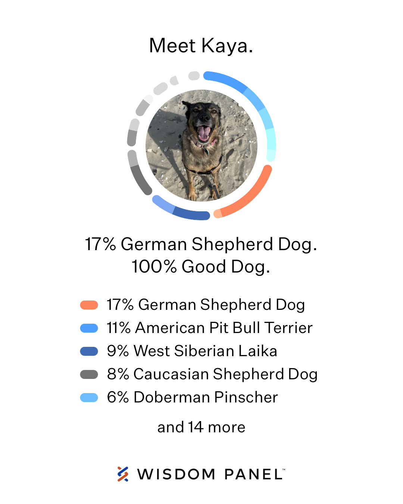

Bio
Kaya is a six year old mixed-breed rescue dog. She was born in 2016 around Sochi, Russia.
The kind people at SochiDogs brought her over to the US and her new furever home.
Currently residing in New Jersey, Kaya enjoys sleeping, barking at passersby, tracking the local wildlife, and a quick dip in the ocean.

Doggo DNA
Kaya is considered an Eastern European village dog.
Some DNA tests don't test for this breed, and so her genetic makeup is a super-mix of 19 breed's DNA (according to our Wisdom Panel results shown here).
Development
I created this site to add to my portfolio, and to get started I largely followed this tutorial and then customized as needed.